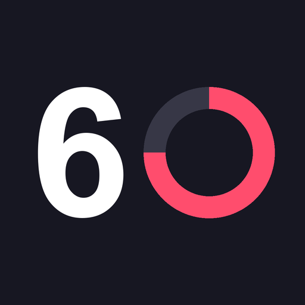

Il momento di oggi si scatta in due.
Ogni giorno un tema. Tu e un amico avete 60 secondi per uno scatto dal vivo, poi vi scoprite nello stesso istante. Momenti di fila, punti che raddoppiano: non rompere la serie.
Scarica Sxty su App Store